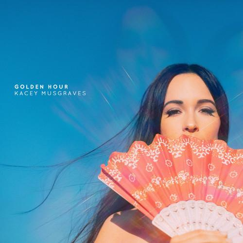
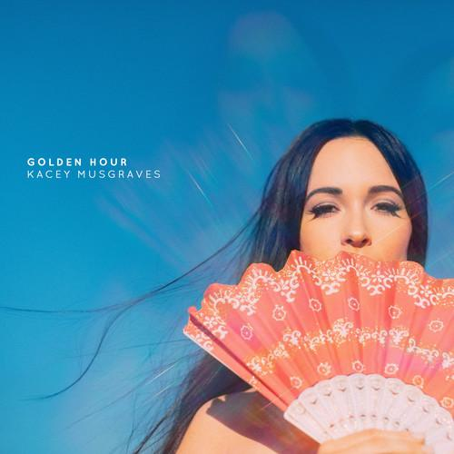

Vinilândia


 

1.1 Slow Burn
1.2 Lonely Weekend
1.3 Butterflies
1.4 Oh, What A World
1.5 Mother
1.6 Love Is A Wild Thing
1.7 Space Cowboy
1.8 Happy & Sad
1.9 Velvet Elvis
1.10 Wonder Woman
1.11 High Horse
1.12 Golden Hour
1.13 Rainbow
Kacey Musgraves: Golden Hour
R$ 121,24
Vinyl LP pressing. 2018 release the fourth album from country music singer/songwriter Kacey Musgraves. Kacey describes this album as having a trippy twist citing the Bee Gees Sade and Neil Young as influences. In addition to reuniting with previous collaborators such as Luke Laird Shane McAnally and Natalie Hemby Musgraves sought out pals Ian Fitchuk and the Silver Seas Daniel Tashian as her primary co-producers and co-writers. Musgraves wrote and recorded most of the songs from the album throughout 2017 about the writing process she said: I have a lot more love songs this time around and Ive never been one to write a love song and really feel it. She continued: That probably sounds like the most depressing thing ever. But Im coming off getting married and being in this golden hour of my personal life where all these things are finally coming to fruition. I found myself inspired to write about this person and all these things he brought out in me that werent there before.